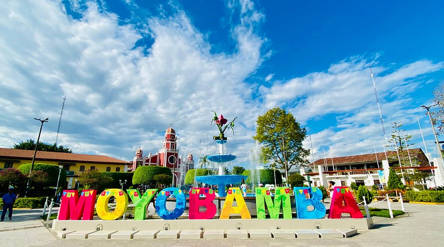
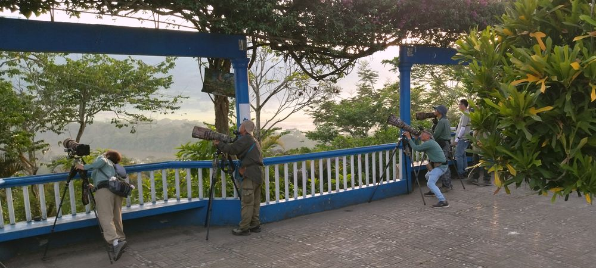

🏙️ Lugares Emblemáticos

Plaza Central
Corazón de la ciudad, rodeada de cafés, galerías y una vibrante vida urbana.

Pachas
Ideal para caminatas, picnic y avistamiento de aves en un entorno natural.

Mirador
El mirador donde te agarra el mal aire y tinen que pasrte el huevo.